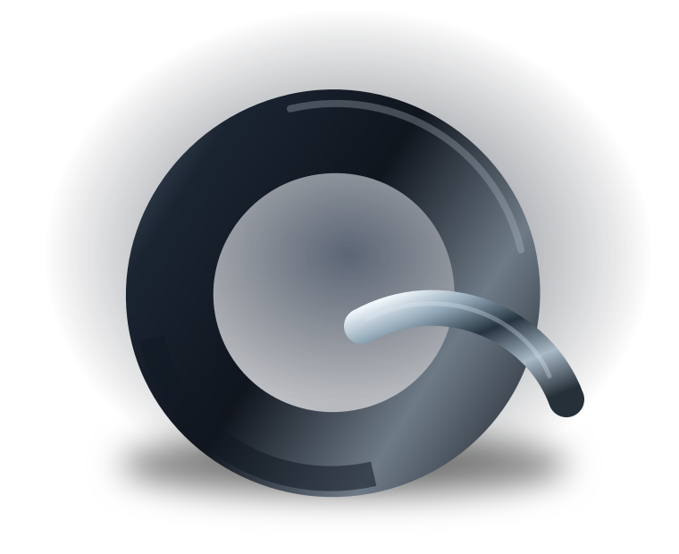
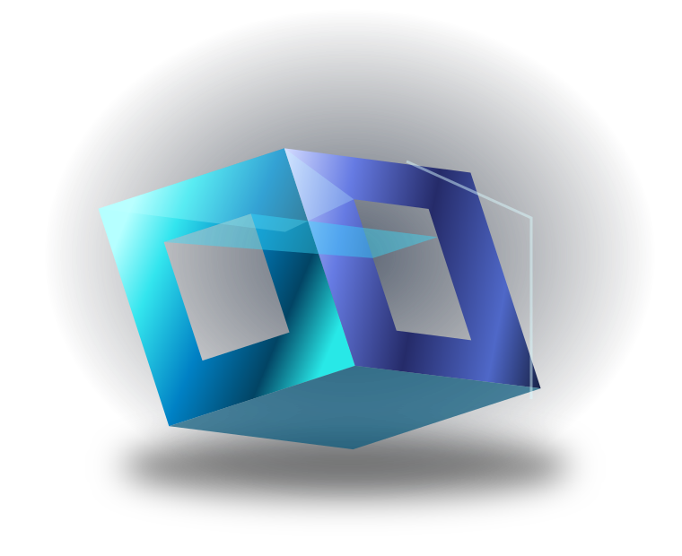
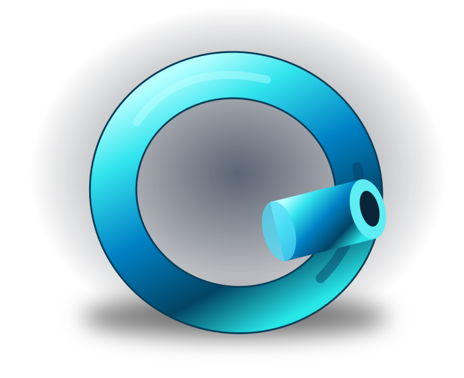
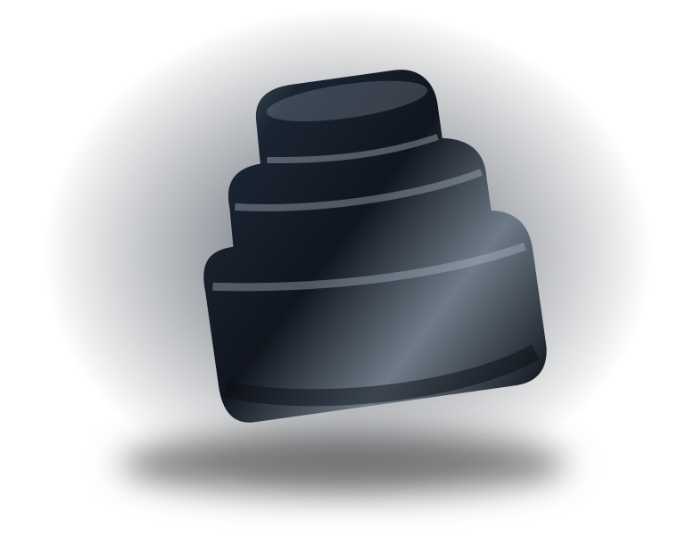
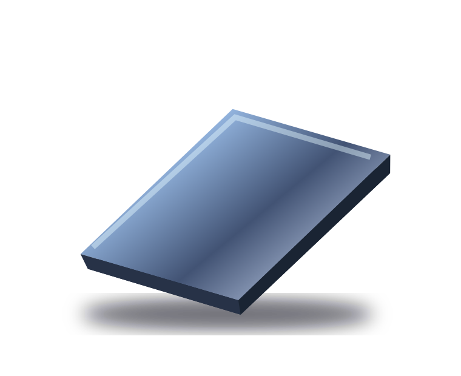
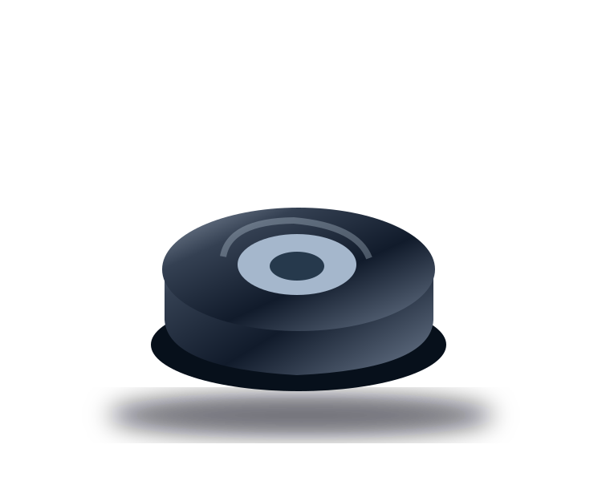
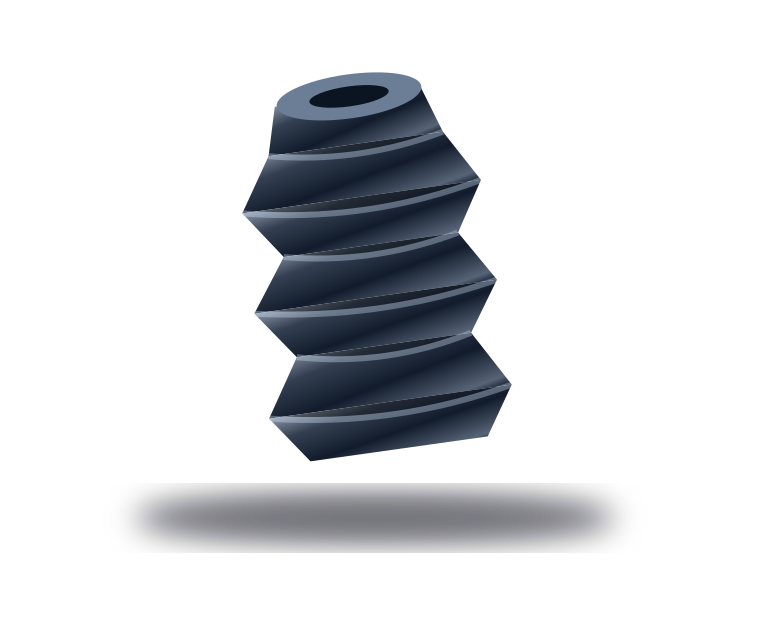
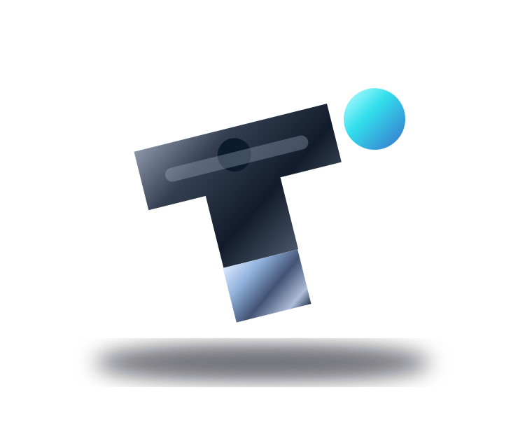

R / PRODUCT UNIVERSE
Ürünlerimiz.
Aradığınız parçaya ürün, malzeme veya uygulama üzerinden ulaşın.

ÜRÜN KATALOĞU
İhtiyacınızın formunu bulun.
⌕
08 ÜRÜN GRUBU
SILIKON↗

Silikon Profil & Fitil
Özel kesitli profil, fitil ve ekstrüzyon çözümleri.
Ürün detayını incele ↗
SIZDIRMAZLIK↗
Conta & O-Ring
Farklı geometriler ve çalışma koşulları için sızdırmazlık elemanları.
Ürün detayını incele ↗
SILIKON↗

Silikon Hortum
Düz veya özel kesitli esnek hortum ve boru uygulamaları.
Ürün detayını incele ↗
ÖZEL ÜRETIM↗

Kalıplı Teknik Parçalar
Geometriye ve uygulamaya özel elastomer parça tasarımları.
Ürün detayını incele ↗
SILIKON↗

Levha & Şerit
Conta kesimine ve özel imalata uygun levha / şerit formları.
Ürün detayını incele ↗
KAUÇUK↗

Titreşim Takozu
Makine ve ekipmanlarda esnek bağlantı parçaları.
Ürün detayını incele ↗
KAUÇUK↗

Körük & Diyafram
Dinamik hareket ve koruma uygulamalarına yönelik tasarımlar.
Ürün detayını incele ↗
ÖZEL ÜRETIM↗

Özel Geometrili Parça
Teknik çizime veya numuneye göre özelleştirilebilir parçalar.
Ürün detayını incele ↗
Sonuç bulunamadı.
Arama kriterinizi değiştirebilir veya özel parça talebi oluşturabilirsiniz.
Özel üretim talebi ↗